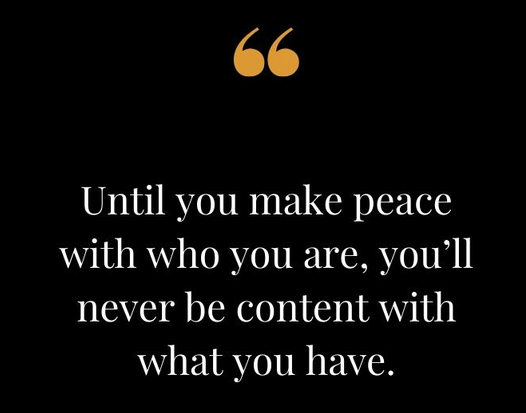

Seems like you want to know more, you want to reach true happiness it wont be an easy path but it will be worth it!!
First of all let's define some strong words that affect our lives heavly
Expectations And Attachments
Expectations and Attachments leads to disappointment, because the higher your expectation are the more you are to be disappointed .
Lets take an example again what if a friend hyped you about a movie or a game that’s about to be released so when you watch that movie you are most likely going to be disappointed but instead what if you watched that movie without hearing anything about it before hand you might like it even though it’s the same movie in either case, So that’s expectation lets see now how attachment affect you Some people may cross your boundaries, do you have to forgive them every time, because if you do you are repeatedly hurting yourself to give others another chance;that is not fair to you .
So we can conclude that your expectation about enjoyment affect your experience and your happiness . The same thing can be said about attachment; the more you are invested into something the more likely you are to be hurt by it, for example relationships ; You are not a selfish person if you put yourself first in some situation and move on.
The Right Approach
For many, it’s not about an SSRI or a diagnosis, It’s about creating a life worth living SSRI stands for Selective Serotonin Reuptake Inhibitor. SSRI antidepressants are a type of antidepressant that work by increasing levels of serotonin within the brain. Serotonin is a neurotransmitter that is often referred to as the “feel good hormone” . The concept of taking life as it comes is one of the main things we should be doing.
We can see the proof of this from the following: people can be extremely well off in their life and still be unhappy, while other people can struggle a lot, and still maintain a happy and optimistic mindset.
Our Advices For You
First of all you should always remember that happiness is different from pleasure ;happiness has something to do with struggling, enduring and accomplishing
If you are struggling with something you have to ask yourself “is the sacrifice worth for me to make ?” and :
- If the answer is YES then by all means make the sacrifice
- But if the answer is NO then try to go after your happiness
Surround yourself with good friends, but also be a good friend for someone. But how can you be a good friend you ask.
If a friend comes to you and shares something that has been bothering them, how do you respond? Do you try to help them solve their problem? Or do you listen to them empathically
Usually, many people’s automatic response in such a situation is to problem-solve. However, this is not always the case. Sometimes, people want emotional support, they want someone to be there for them. Just because you cannot help them through the problems they are facing doesn’t mean that you are not helpful.
Simply having genuine responses such as, “Hey man, that sounds really rough” or “That sounds really exhausting bro, is there anything I can do for you?” can go a long way towards demonstrating support or even smiling in people's face can make some one's day
So Remember
Don’t let others set your expectations and don’t be blindly attached to something or someone
Appreciate life and don’t get stuck thinking about stuff you cant change because what you get after struggling, enduring and accomplishing is true happiness
Find a good friend and be one for others